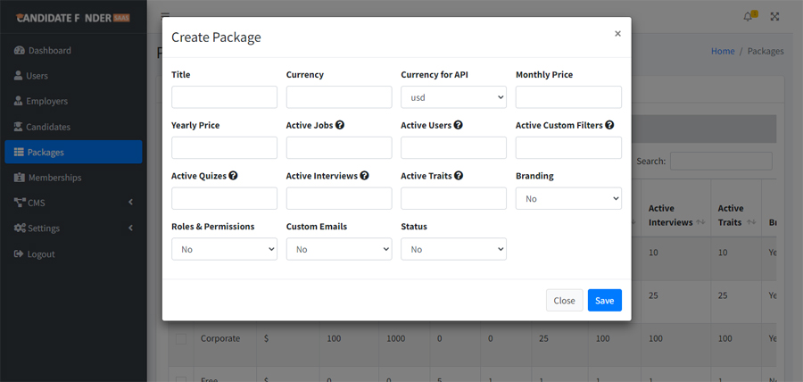
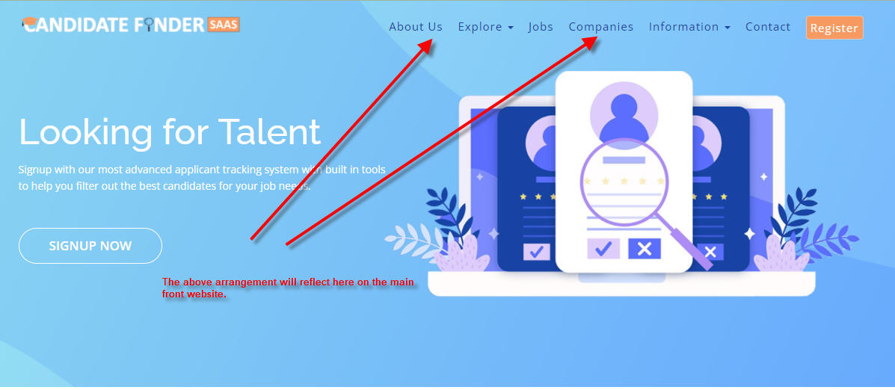

Introduction
Candidate finder SaaS is an advance recruitment portal where employers can signup and pay for unique features like their own web section with branding, conducting online quizes and interviews from candidates. It's unique job board allows employers to do an analysis and scruitny among applying candidates before having them onboard. Admin/Owner of the system can make any number of packages with monthly and annual subscription against which employers can have paid memberships. With the extensive CMS features, the content on the front website from menus, pages, news and other necessary things can be easily controlled.
The system is built on laravel with a complete and easy to use admin panel to review and control content and features on the system. With the minimum set of installation requirements, it can be set up on any apache or nginx hosting.
Server Requirements
The set of requirements are very simple and are available/enabled on most of the hosting providers.
- Apache or nginx
- Database support (e.g. mysql or mssql)
- PHP 7.3 or greater
- PDO extension support
- PHP GD library support
- OpenSSL support
- CURL support
- Public folder needs to be writeable
Installation
Case 1 to resolve public:
Before installation, you should learn a main thing about the laravel's public directory. Laravel's original setup is shipped with a mechanism to hide the main files and provide a "Virtualization" for requests as the "public" directory.
Laravel recommends to point your domain's root to the public directory instead of the main root of the script.
{kind=link}
Case 2 to resolve public (when case1 is not possible for you):
But in some cases, you are unable to do it, so simply create a file named ".htaccess" at the project root and copy the below code.
RewriteEngine On
RewriteCond %{REQUEST_URI} !^/public/
RewriteRule ^(.*)$ /public/$1 [L,QSA]

Now that you have understand the public directory case of laravel. It's very easy with the built in three step "Installation Wizard". Simply put the content "script" folder from the main zip (which you have downloaded from codecanyon) on your hosting's destination folder, point your domain or create .htaccess file and access the url like below (depending on what you choose) to get to the installation wizard
- If On Root -> https://www.example.com/install
- If On Sub Domain -> https://subdomain.example.com/install
- If On Sub Folder -> https://www.example.com/desired-folder/public/install
Note : This case is not recommended with laravel and in this case 1 and case 2 will not work for this scenario.
Note : You need to have database credentials while running the installation wizard. You can take help from this video for creating database credentials and installation.
{kind=link}
Subdomain Setup
{kind=link}
For this you need to create a wildcard subdomain like in below steps and point to the same public directory.
{kind=link}
{kind=link}
Admin Navigation
The system is built together with a bunch of modules to acheive the intended results. Eeach item in a menu is a module to control different aspects of system. Below all the features are explained for what those can do and how you can use these.
{kind=link}
Dashboard
The dashboard gives you summary of the whole system in one picture. It has charts for sales and signups which can be filtered as monthly or annually etc. Dashboard can be accessed from the main navigation menu via the "Dashboard" item
{kind=link}
Packages
The first thing an admin needs to do after installation is creating the necessary free package (can exist only one) and paid packages as many as you like. A package can be created by going to admin menu -> packages -> Create Package

{kind=link}
{kind=link}
{kind=link}
{kind=link}
Portal Vs Multitenancy
Portal means a regular job portal where all employers and candidates create jobs and apply to jobs on the main/front site
Whereas in multitenancy, each employer will have a separate interface where only that employer's job will appear. On the main site, only employer can signup and login while candidates signup and applies to job on employer's separate site/interface.
As we have set two different demos for Multitenancy and Regular on two different domains on the product's page. You need to do a combination of settings to achieve like in the demos depending on your choice.
The sections you'll be doing changes to achieve above will be in the following sections.
- Admin -> Portal vs Multitenancy
- Admin -> CMS -> Menus
- Admin -> CMS -> Home
Pages
You might want to create site pages like "terms and conditions", "faqs" etc which you can create by going to "Menu -> Pages -> Create Page"

News
Similarly as pages, You might want to create site news like "your events" etc which you can create by going to "Menu -> News -> Create News"
{kind=link}
Menu
When you have contents in the system, you can update the front site menu as given in the image below.
Unlike pages and news, there are pre defined pages in the system like the "All Companies Pages", "All Jobs Pages" which you can keep or remove as per your needs.

{kind=link}
{kind=link}
Settings : General
{kind=link}
General Settings can be accessed by clicking on "Settings -> General" item in the main navigation menu. As displayed in the image, From this screen some default settings for the system can be set like the site logo, home page banner, site favicon, admin email and other settings.
Settings : Email
{kind=link}
From this setting you can either select to have on site smtp (hosting's built in smtp server) or an external smtp depending on your requirements.
Settings : Apis
{kind=link}
From this settings, the google and linkedin login can be enabled or disabled. To make google and linkedin login to work, you need to have credentials from google/linkedin which are very easy to make and obtain. You can follow our main site for the tutorials on how you can create them. Similarly credentials for stripe and paypal can be obtained and entered here.
Settings : Languages
{kind=link}
Any number of languages can be added to the system with the ten languages shipped with the system. Once any language is "selected" from the selected, the whole interface will be converted to that language.
{kind=link}
Settings : Employer Settings Overrides
{kind=link}
When an employer does not have "Branding" or "Custom Emails" enabled in their membership, these settings will take their respective place for them. An admin needs to maintain these as an override for the absence of membership features.
Update Application
Step 1
{kind=link}
Step 2
{kind=link}
Step 3
{kind=link}
Step 4
{kind=link}
Step 5
{kind=link}
{kind=link}
Step 6
{kind=link}
Step 7
{kind=link}